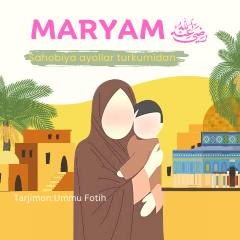

MOMaryam binti Imronning taqvoli va mo'jizali hayoti haqida islomiy asar.
Bu kitob 'Sahobiya ayollar' turkumiga kiruvchi asar bo'lib, Maryam binti Imronning hayoti va fazilatlarini tasvirlaydi. Unda Maryam onamizning taqvodor oilada o'sishi, Zakariyo alayhissalom tarbiyasida bo'lishi va Allohning mo'jizalari bilan siylangani haqida so'z yuritiladi. Kitob Iso alayhissalomning onasi Maryam binti Imronning ibratli hayotini islomiy nuqtai nazardan yoritadi.